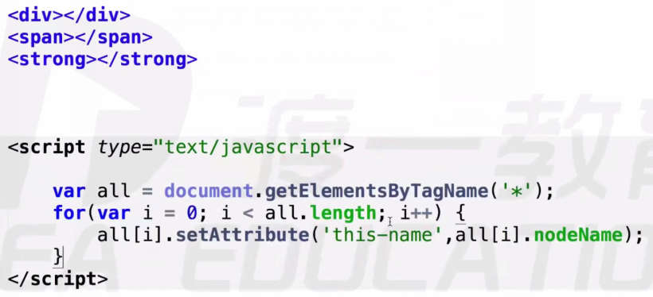

一、DOM基本操作
getElementById方法定义在Document.prototype上，即Element节点上不能使用。
getElementsByName方法定义在HTMLDocument.prototype上，即非html中的document以外不能使用(xml document,Element)
getElementsByTagName方法定义在Document.prototype 和 Element.prototype上
- 选中所有HTML元素
getElementsByTagName("*");
HTMLDocument.prototype定义了一些常用的属性，body,head,分别指代HTML文档中的
<body><head>标签,也就是说可以直接用document.body,document.head，不用重新选择Document.prototype上定义了documentElement属性，指代文档的根元素，在HTML文档中，他总是指代
<html>元素，及document.documentElement --> HTMLgetElementsByClassName、querySelectorAll、querySelector在Document,Element类中均有定义(了解)
二、DOM增删改查
2.1 增
document.createElement();
document.createTextNode();
document.createComment();
document.createDocumentFragment();
2.2 插
剪切操作，将页面里面已有的东西放到另一个部分里面
PARENTNODE.appendChild();
PARENTNODE.insertBefore(a, b);insert a before b
2.3 删
- parent.removeChild();
- 谋杀，父节点将孩子结点剪切出来
- child.remove
- 自杀，元素自己删除自己，是真正的销毁
- parent.replaceChild(new, origin);
- 旧元素被剪切出来
三、Element节点的一些属性
- innerHTML：
改变结点内部的内容，可读写，写入是覆盖原有内容
如果要追加一个子元素，可以用”+=”运算符
- innerText(火狐不兼容) / textContent(老版本IE不好使)
四、Element节点的一些方法
- ele.setAttribute();
给节点设置行间属性，如给div添加一个class，属性值为demo，
div.setAttribute("class","demo");可以设置系统没有的属性值

- ele.getAttribute();
- 取属性值
div.getAttribute("class");